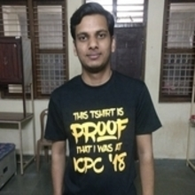

Career Summary
I am a quick learner with a never-give-up attitude. Passionate and hard-working Software Engineer with an experience of 4+ years in development and deployment cycle. Enthusiastic team player dedicated to streamlining process and proper resource management within the team. I love competitive programming, mathematics and exploring new tools/technologies.
Work Experience
Associate Technology L2
Publicis Sapient, Bengaluru, India
May 2022 - Present
Roles Description
- Implemented backend functionalities using Node.js, NestJS, GraphQL, AWS, etc.
- Was responsible for Code Reviews and SonarQube Code Quality maintenance.
- Integrated multiple services of Azure such as App Configuration, Key Vault, Service Bus, etc. using Azure SDKs for Node.js.
- Working on setting up Common Integration Environment.
- Working on Azure Serverless features such as Azure Function Apps, Logic Apps, Event Grid Topics, etc.
- Developing Spring Boot Applications using Azure Functions.
Tools/Technologies:
- Node.js
- NestJS
- GraphQL
- TypeScript
- Docker
- AWS
- Azure
- Jira
- Confluence
- Git
- Redis
- Java
- Spring Boot
Associate Technology L1(NodeJS Developer)
Publicis Sapient, Bengaluru, India
Feb 2021 - Apr 2022
Role Description
- Developed several microservices using Node.js, NestJS, GraphQL, etc.
- Integrated third-party SOAP APIs with Node.js application.
- Implemented Configuration Management Framework using AWS AppConfig.
Tools/Technologies:
- Node.js
- NestJS
- GraphQL
- TypeScript
- Docker
- AWS
- Jira
- Confluence
- Gitlab
Software Engineer-I
Ameyo, Gurgaon, India
Jul 2019 - Jan 2021
Role Description
- Corrected and stabilized various monitoring and reporting data points across the dashboard, live monitoring, and reports in Ameyo by identifying the product as well as technical gaps.
- Contributed in delivering Number Masking in GA 4.11.
- Developed Apps using ReactJS from scratch for Video KYC Project.
- Contributed in delivering Groups & Groups Hierarchy in GA 4.8.
- Provided L4 support for a leading banking project and resolved critical issues with proper RCA.
- Delivered many product requests in Accelerated RoadMap Development mode creating value to the company's existing product.
- Developed in various complex modules from scratch with good quality while adhering to the time-lines.
Tools/Technologies:
- Java
- GWT
- REST
- PostgreSQL
- React.js
- Linux
- Git
- Agile
- Jira
- Jenkins
Intern-Product
Ameyo, Gurgaon, India
Jan 2019 - Jul 2019
Role Description
- Worked on GWT architecture and developed various features in the existing product.
- Developed Voice-Call related features.
- Ensured proper and stable delivery of releases by fixing issues during the release cycle.
Tools/Technologies:
- Java
- GWT
- REST
- PostgreSQL
- Linux
- Git
- Agile
- Jira
- Jenkins
Cloud Developer Intern
Hanu Software Solutions, Greater Noida, India
Jun 2018 - Jul 2018
Role Description
- Created virtual machines using ARM Template, Powershell script, etc
- Worked on Azure IoT Hub
- Did project on device to cloud messaging using Azure IoT Hub
Tools/Technologies:
- Azure
- .Net
- Microsoft Power BI
- Microsoft Visual Studio
Publications
P. Agarwal, N. Garg, and P. Singh, “Predicting poverty index using Machine Learning on remote sensing and household survey data,” International Journal of Recent Technology and Engineering, vol. 8, no. 3, Sep., pp. 164-168, 2019, https://doi.org/10.35940/ijrte.C3918.098319.
- Machine learning based research using CNNs to map poverty of India using aerial photographs and survey data.
- Transfer learning approach used to fine tune a modified Inception v3 model on a dataset of 60,000 daylight aerial images of India and corresponding nightlight and survey data.
- Data sources included HERE Maps API for daylight images, DMSP-OLS for nightlight images and DHS Program Survey Data.
- Achieved an r value of 0.73 despite the data being noisy.
Tools/Technologies:
- Python
- PyTorch
- NumPy
- R
- Pandas
- scikit-learn
- matpolitlib
CERTIFICATIONS
AWS Certified Cloud Practitioner
- Issuer: Amazon Web Services (AWS)
- Credentials: AWS Certified Cloud Practitioner issued by AWS Training and Certification
- Issued on: Apr 29, 2023
- Expires on: Apr 29, 2026
Projects
Poverty Prediction Using CNNs
Jul 2018 - Jun 2019
- Mapping poverty of India using aerial photographs and survey data
- Machine learning based research project along with a research paper
Tools/Technologies:
- Python
- PyTorch
- NumPy
- R
- Pandas
- scikit-learn
- matpolitlib
IoT Hub .Net Simulated Device Client App
Jul 2018
- Real - time Temperature Visualization
- Deployed .Net application on Azure IoT Hub
- Visualized real time temperature variations using Microsoft Power BI
- Used Stream Analytics to send data from device to cloud
Tools/Technologies:
- Azure
- Microsoft Power BI
- Azure IoT Hub
- .Net
Vehicle Number Plate Identification
Jan 2018 - Jul 2018
- Identification of moving object i.e. Car
- Car's Number Plate Identification using OpenCV
- Displayed characters of number plate to allow entry to only registered vehicles
Tools/Technologies:
- Python
- OpenCV
- Machine Learning
Skills & Tools
Programming Languages
-
C
-
C++
-
Java
-
JavaScript
-
TypeScript
Frontend
-
GWT
-
HTML/CSS
-
Bootstrap
Backend
-
Node.js
-
NestJS
-
Spring Boot
Databases
-
PostgreSQL
-
MySQL
-
NoSQL
Cloud
-
AWS
-
Azure
Others
- Data Structures & Algorithms
- GraphQL
- REST APIs
- SOAP APIs
- J2EE
- Hibernate
- Swagger
- Docker
- Redis
Education
-
B.Tech in Computer Science & EngineeringABES Engineering College, Ghaziabad2015 - 2019Percentage: 82.04%
-
Senior Secondary EducationArmy Public School, Agra2014 - 2015Percentage: 92.8%
-
Secondary EducationArmy Public School, Agra2012 - 2013CGPA: 9.8
Awards & Achievements
-
Most Impactful Rookie (2021 Global T&H Rewards and Recognition - Publicis Sapient)
-
Director's Silver Medal for securing second highest percentage(82.04%) in B.Tech CSE(2015-2019)
-
Honorable Mention at ICPC Regionals 2018
-
Qualified for Facebook HackerCup 2018 Round 1
-
AIR - 299 in CodeVita 2018 Round 1
-
Director's Silver Medal for securing second highest percentage(90.75%) in B.Tech First Year
Co-curricular Activities
- Former Event Manager at Enigma Programming Club, ABESEC, Ghaziabad
- Former Problem Setter at Enigma Programming Club, ABESEC, Ghaziabad
- Former Programming Coordinator at Enigma Programming Club, ABESEC, Ghaziabad
- Former Core Team Member at HUHC(Help Us to Help the Child), Ghaziabad
- Former Event Coordinator at college annual fest(Genero-2017) in TECH CS Club, ABESEC, Ghaziabad
- Former Member of NSS Club, ABESEC, Ghaziabad
Language
- Hindi (Native)
- English (Professional)
Interests
- Cricket
- Watching Sports
- Cooking